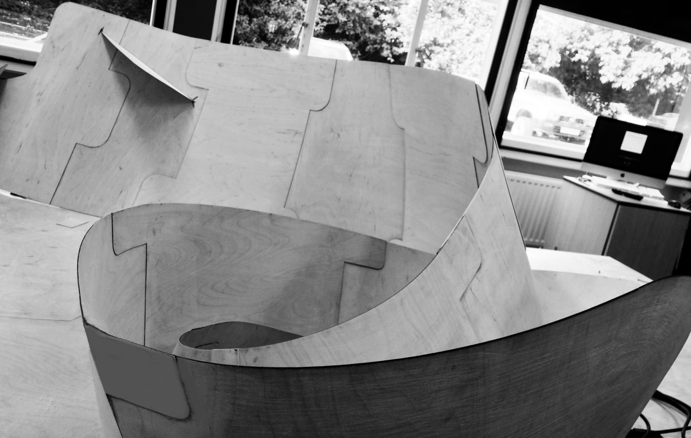
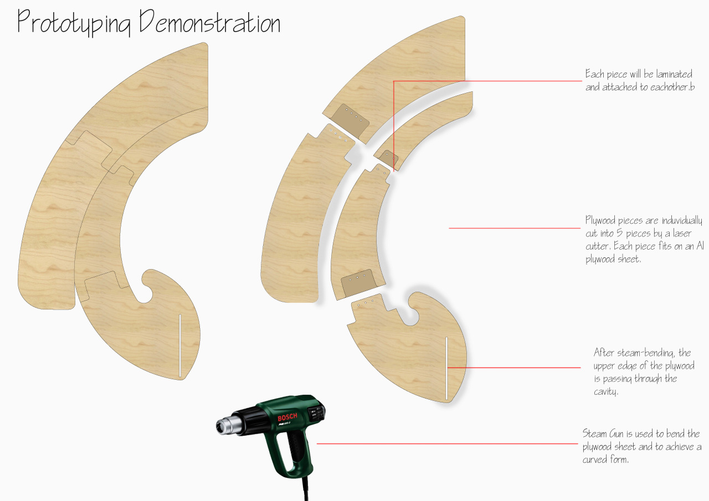
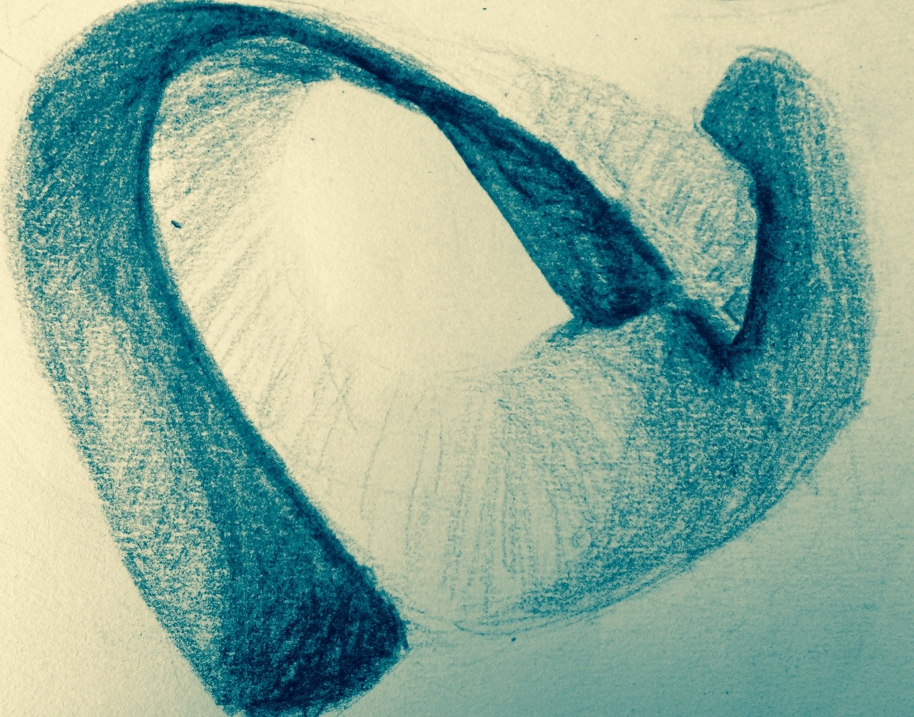
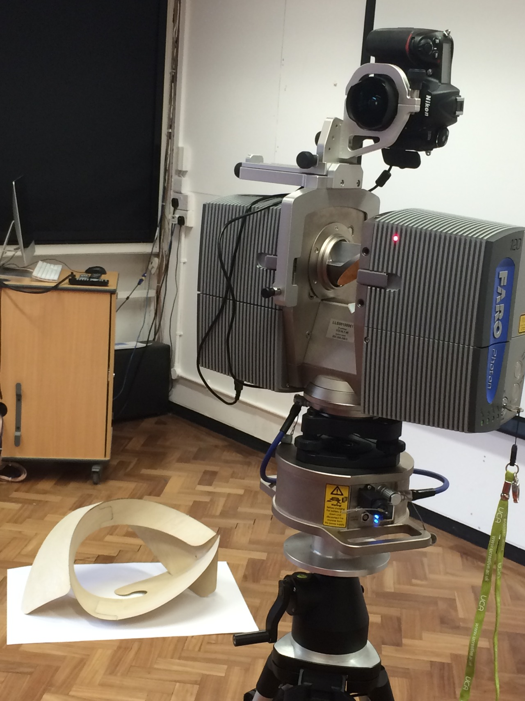
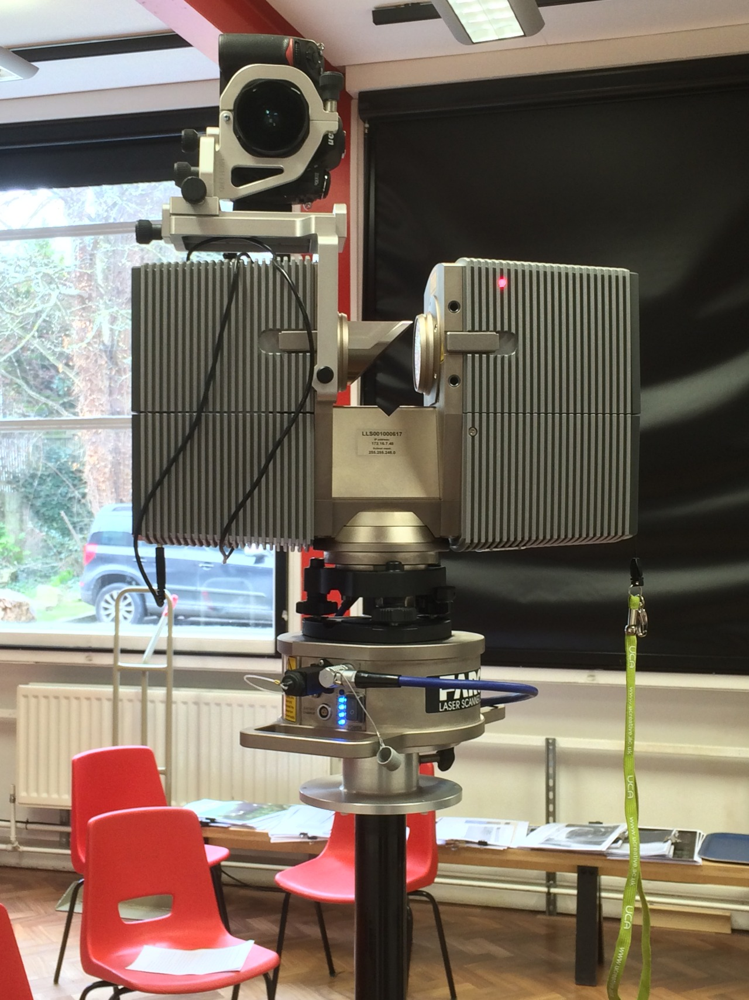
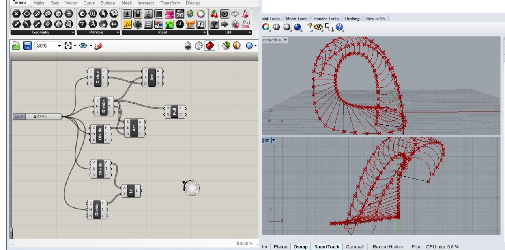
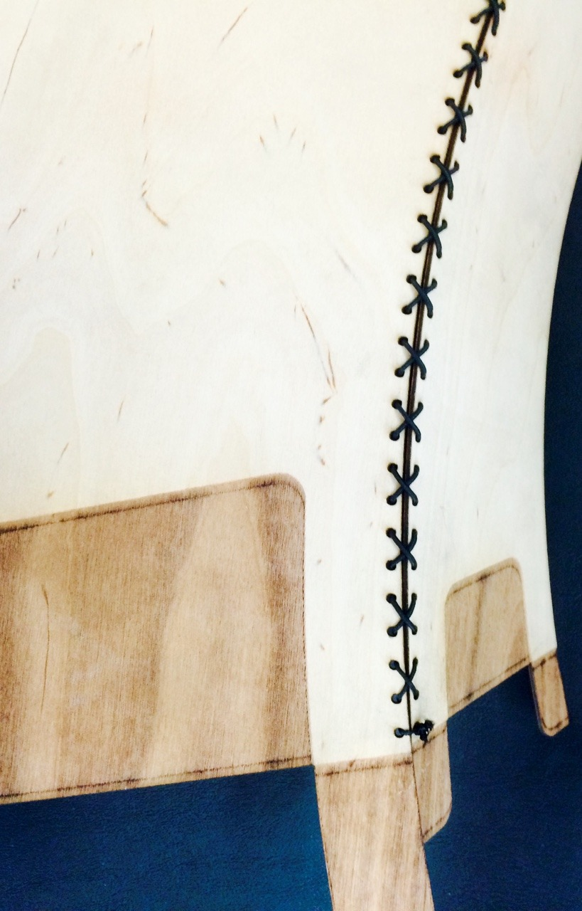
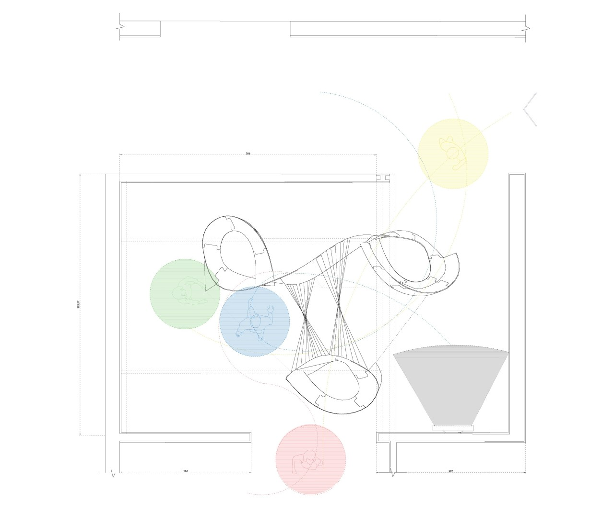
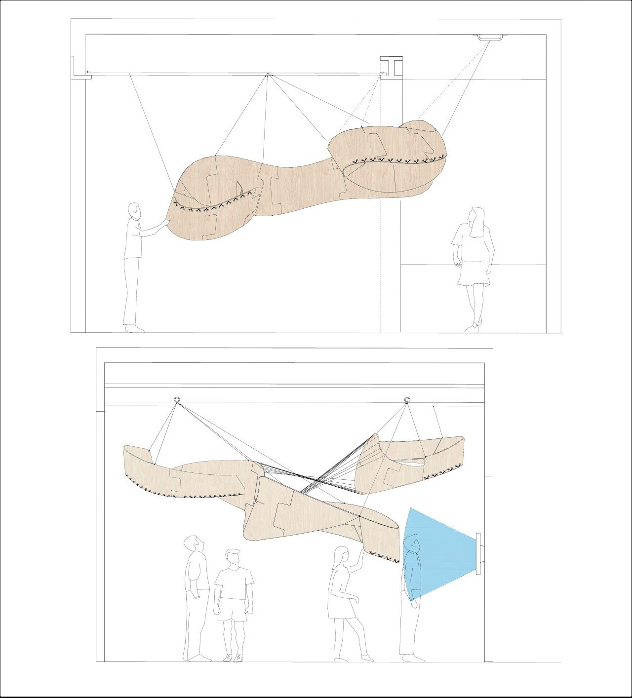

My keen interest in digital design prompted me to investigate different ways we can narrow the divide between physical and digital worlds. For my Master's research, I merged conventional and digital design techniques and proposed an integrated method.
Ideating loop structures in the early design phases.


First physical conceptual models.


3D scanning and algorithmic design process.


Installation plan. Final testing with large pieces of plywood.
The final outcome of the process was exhibited in the Canterbury School of Architecture, and earned me a Merit award.

